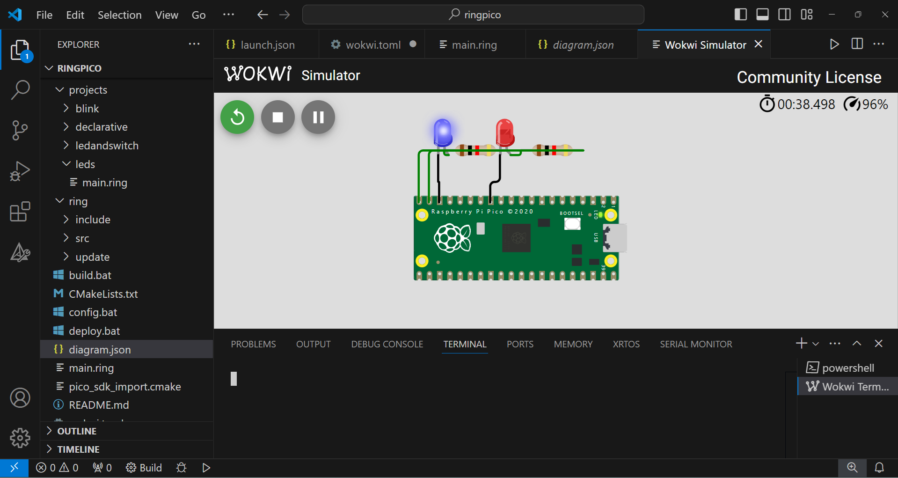

Using Ring for Raspberry Pi Pico Microcontroller
In this chapter we will learn about Using Ring for Raspberry Pi Pico Microcontroller.
This extension is added to the Ring language starting from Ring 1.21.
Using this extension We can write Ring programs that runs on the RP2040 Microcontroller
Extension folder: ring/extensions/microcontroller/ringpico
Contents:
Install
Programming
Building
Deployment
Blink sample
LEDs sample
LED and Switch sample
Declarative Programming sample
Using Wokwi Simulator
Install
Install Ring (Required to compile the Ring program in the Building step)
Install Pico-SDK from: https://github.com/raspberrypi/pico-setup-windows
Update config.bat to point to the Pico-SDK folder on your computer
Programming
Samples exist in the (ring/extensions/microcontroller/ringpico/projects) folder
You can create a sub folder for your project in the (projects) folder
You can update the (ring/extensions/microcontroller/ringpico/main.ring) file to load your project
Building
To build your project, just run the build.bat file
Deployment
Connect Raspberry Pi Pico to your computer while pressing on the BOOTSEL button.
Keep pressing the BOOTSEL button until you see the File Explorer window.
Run the deploy.bat file which will copy the ringpico.uf2 file to the device
Blink sample
DELAY = 100
LED_PIN = PICO_DEFAULT_LED_PIN
gpio_init(LED_PIN)
gpio_set_dir(LED_PIN, GPIO_OUT)
while True
gpio_put(LED_PIN, True)
sleep_ms(DELAY)
gpio_put(LED_PIN, False)
sleep_ms(DELAY)
end
LEDs sample
DELAY = 100
LED_PIN = PICO_DEFAULT_LED_PIN
LED1 = 14
LED2 = 15
aPins = [LED_PIN, LED1, LED2]
for nPin in aPins
gpio_init(nPin)
gpio_set_dir(nPin, GPIO_OUT)
next
while True
gpio_put(LED_PIN, True) sleep_ms(DELAY)
gpio_put(LED1 , True) gpio_put(LED2, False) sleep_ms(DELAY)
gpio_put(LED1 , False) gpio_put(LED2, True) sleep_ms(DELAY)
gpio_put(LED_PIN, False) sleep_ms(DELAY)
end
LED and Switch sample
File: main.ring
load "mylib.ring"
SWITCH_PIN = 14
LED_PIN = 15
func main
oSwitch = new LEDSwitch {
setPin(SWITCH_PIN)
LED { setPin(LED_PIN) }
}
while True
oSwitch.process()
end
File: mylib.ring
class LED
Pin
func setPin nPin
Pin = nPin
gpio_init(Pin)
gpio_set_dir(Pin,GPIO_OUT)
func Enable
gpio_put(Pin,True)
func Disable
gpio_put(Pin,False)
class LEDSwitch
Pin
Status = False
LED = new LED
func setPin nPin
Pin = nPin
gpio_init(Pin)
gpio_pull_up(Pin)
func getStatus
return gpio_get(Pin)
func Process
if ! getStatus()
Status = ! Status
if Status
LED.enable()
else
LED.disable()
ok
sleep_ms(30)
while ! getStatus() end
sleep_ms(30)
ok
Declarative Programming sample
File: main.ring
load "circuit.ring"
SWITCH_PIN = 14
LED_PIN = 15
func main
Circuit {
LED {
Pin = PICO_DEFAULT_LED_PIN
Blink = True
Delay = 0.1
}
LEDSwitch {
Pin = SWITCH_PIN
LED {
Pin = LED_PIN
Blink = True
Delay = 3
}
}
}
File: Circuit.ring
circuit = new Circuit
class Circuit
LED
LEDSwitch
aObjects = []
lCallBraceEnd = True
func getLED
aObjects + new LED
return aObjects[len(aObjects)]
func getLEDSwitch
aObjects + new LEDSwitch
return aObjects[len(aObjects)]
func braceEnd
if ! lCallBraceEnd return ok
lCallBraceEnd = False
while True
for oObj in aObjects
oObj.process()
next
end
class CircuitComponent
func process
class LED from CircuitComponent
Pin
Delay = 1
Blink = False
t1 = clock()
lStatus = False
lCallBraceEnd = True
lEnableProcess = True
func setPin nPin
Pin = nPin
gpio_init(Pin)
gpio_set_dir(Pin,GPIO_OUT)
func Enable
lStatus = True
gpio_put(Pin,True)
func Disable
lStatus = False
gpio_put(Pin,False)
func braceEnd
if ! lCallBraceEnd return ok
enable()
func process
if ! lEnableProcess return ok
if Blink and ( ((clock()-t1)/clockspersecond()) > Delay )
lStatus = ! lStatus
gpio_put(Pin,lStatus)
t1 = clock()
ok
class LEDSwitch from CircuitComponent
Pin
Status = False
LED = new LED { lCallBraceEnd = False lEnableProcess = False }
func setPin nPin
Pin = nPin
gpio_init(Pin)
gpio_pull_up(Pin)
func getStatus
return gpio_get(Pin)
func Process
LED.process()
if ! getStatus()
Status = ! Status
if Status
LED.enable()
else
LED.disable()
ok
LED.t1 = clock()
LED.lEnableProcess = Status
sleep_ms(30)
while ! getStatus() end
sleep_ms(30)
ok
Screen Shot:

Using Wokwi Simulator
Using this simulator, We can test RingPico programs without the need to use real hardware.
Steps:
Update main.ring to use the LEDs project
load "projects/leds/main.ring"
Build the project using build.bat
Install Visual Studio Code
Install Wokwi Simulator extension
Open the folder ring/extensions/microcontroller/ringpico using VS Code
Run the project using the Simulator (Press F1 then select Wokwi: Start Simulator)
Screen Shot:
